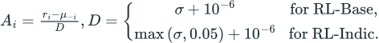
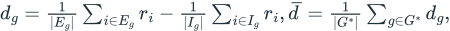

整体概括
数学涨分，不等于其他任务留住了
作者在总参数 30B、每次激活 3B 的多语混合专家上比较两个独立的 GRPO 训练分支。发布分支的 MATH 提升 36.07 分，但 XQuAD-Indic 的抽取 F1 下降 19.32 分；同样按答案跨度计分的英语 XQuAD 反而上升。文章要解释的是随训练目标改变而发生的能力重分配，不是比较两个模型谁总体更强。
对照原文证据
We study a 30B-total, 3B-active multilingual mixture-of-experts model ( NVIDIA, 2025 ) covering English and eight Indic languages. Two GRPO branches start from the same supervised checkpoint. The released branch trains on mathematics, structured outputs, workplace tool use, and multiple-choice question answering; the sibling adds Indic instruction following and language-aware rewards.The released branch gains 36.07 points on MATH but loses 19.32 F1 points on XQuAD-Indic, while XQuAD-English improves under the same scoring rule.恢复任务分数，不代表恢复了作答方式
另一分支加入印度语言指令跟随及奖励塑形，挽回退步任务却没有恢复书写系统合规性，并牺牲部分竞赛数学和代码成绩。后续改用生成式裁判后，抽取又显著变差；从早期检查点做无任务奖励蒸馏，才恢复大部分丢失的 F1。无奖励并不是没有学习信号，监督来自教师的下一词元分布。
对照原文证据
An independently trained sibling adds Indic instruction following and language-aware shaping. It recovers the regressing Indic task scores and preserves MATH, but does not restore script compliance and trades off competition mathematics and code. In a later round, judge training is followed by a sharp extraction decline from the Indic branch; reward-free distillation from its earlier checkpoint restores most of the lost F1.No reward model, verifier, or frozen reference policy enters the objective. The teacher is the only anchor, and teacher and student share a vocabulary and a byte-identical tokenizer.Research gap
有原文供阅读，有原文答案供抽取，是两回事
作者没有把低分一律归为印度语言退步。译文和摘要也依赖所给文本，却在发布分支上改善；英语与印度语言的 XQuAD 同为抽取，却向相反方向变化。作者提出的待检验解释是奖励对不同语言任务的覆盖不对称，不是抽取本身不适合强化学习。
对照原文证据
Table 1 helps distinguish possible explanations. Language alone is not enough, because other Indic tasks improve. Nor is task family, because both question answering and instruction following appear among the gains and losses. Simply supplying a source text does not explain the split either. FLORES-IN translation and CrossSum-IN summarization both improve despite requiring a source.The most informative comparison is within XQuAD. English improves by 11.71 F1 points, while Indic falls by 19.32 under the same extractive requirement and scoring rule. Extraction therefore cannot explain the regressions on its own. The pattern suggests an interaction between language and task similarity: English gains extend beyond the rewarded tasks, while Indic extraction from a supplied passage deteriorates.We propose that reward coverage is asymmetric across languages. The English-dominant environments may support broad transfer in English, even to extraction tasks they do not directly reward. Indic tasks may benefit mainly when they resemble the training tasks. Answering from a supplied Indic passage lies further from that mixture. This is an explanation to test, not a mechanism established by the benchmark deltas alone.裁判能看见，不代表裁判会保护
格式验证器能从合法 JSON 或机器可读字段给分，不必要求面向用户的印度语言文本。后来能看见整段答案的裁判也没保住短原文抽取。值得追问的是同一语义答案换成逐字片段或扩写后是否得分不同；论文只提出有用性偏爱扩写的可能性，没有直接测量这项偏好。
对照原文证据
Structured-output and workplace rewards can be satisfied with JSON fields, English API names, or other machine-readable content. They do not require an Indic user-facing answer. This creates room for language drift without an explicit reward penalty.The judge reads the whole answer, so an Indic extractive response is visible to it. Yet training against the judge sharply reduces extraction from RL-Indic . One possible explanation is that helpfulness comparisons favor elaborated answers over short verbatim spans, but we have not measured that preference directly. The result shows that visibility alone does not ensure that a reward protects a behavior.算法主线
原图由本站加载；若未显示，可打开下方原图链接。
跟着原图读
- 先读实线
从左侧 SFT-Init 走到两个并列框，确认 RL-Indic 不是从 RL-Base 继续训练；两路分别进入使用同一冻结裁判的后续分支。
- 再读虚线
学生沿下路实线从 Judge-I+ 延伸，教师虚线却跨回第一轮 RL-Indic。加号是辅助奖励包，不表示更晚的步数。
谱系不包含分数或训练对齐程度；共享起点不能把改变了多项训练设置的比较变成单因素试验。
许可：CC BY 4.0。完整原图区域按 PDF 原样栅格化为 PNG，保留图内坐标、图例及颜色；未重绘、重标或加注。
共享起点，分别训练，不把后者当续训
两路从同一个 SFT 导出开始，评估的是两路各自第 40 步。RL-Base 用数学终答、JSON、交替工具调用和选择题的任务奖励。RL-Indic 新增指令跟随，语言项只看最后推理块之后的答案，而重复惩罚遍及整个生成。任务合格和脚本合格是两个信号，正确的书写系统并不能证明语义正确。
对照原文证据
Both RL branches start from SFT-Init . RL-Base is the released checkpoint, and RL-Indic is an independently trained, unreleased sibling. The evaluated RL checkpoints are both from step 40.RL-Base uses judged final-answer mathematics, JSON schema conformance, an iterative tool-call workplace assistant, and multiple-choice QA. Each environment returns a task-specific reward, with no language, script, length, grounding, or repetition term. RL-Indic adds an Indic instruction-following environment with a language term over the final answer and a repetition penalty over the whole generation. Tables 9 and 10 give the reward coefficients and input mixture.The language-identification gate distinguishes languages sharing a script, and unknown labels skip the language term. Repetition detection covers repeated n -grams and character runs across the whole completion. This scope leaves English internal reasoning unpenalized, while discouraging repetition in either the reasoning or the answer. It also keeps language compliance distinct from semantic correctness: an answer in the right script can still be wrong.组内相对分数与实际见到的训练混合
发布分支每提示采样 16 个完成，印度语言分支采样八个；两者用除去当前样本后的均值作基线。对奖励低离散组，后者对归一化分母加下限而不改变排序；相同奖励的组被动态采样丢弃。因此数据表中的输入行占比不是保留组占比，更不是梯度占比，日志也不能还原被丢弃的组所属环境。
对照原文证据
RL-Base samples 16 completions per prompt, and RL-Indic samples eight. Both use a leave-one-out baseline and normalize by the group’s Bessel-corrected standard deviation when it is nonzero. The sibling branch also floors the divisor to avoid amplifying nearly constant rewards. Appendix D.1 gives the exact estimators and the frequency with which the floor matters.Zero-spread groups are left undivided and discarded by dynamic sampling. The floor changes update magnitudes, not the ordering of completions within a group. In the Indic instruction-following environment, 44% of all groups fall below its threshold. Among groups with nonzero spread, 39% do. The floor therefore affects a substantial part of this environment’s training signal, rather than only rare numerical edge cases.where p_{\text{mixed},e} is the fraction of groups in environment e with more than one reward value. Groups survive only at intermediate competence, because a task the model always fails is as uninformative as one it always solves, so an environment’s realized share can rise and then fall while its input share stays fixed. The specified mixture thus need not match the realized training distribution. We cannot reconstruct the latter because the retained logs do not identify discarded groups.裁判与教师是两个不同的角色
第二轮冻结裁判，候选完成按环两两评判，让每个完成各出现在两个位置一次；加号配置另引入长度、重复、书写系统等约束，但两种设置都不直接奖励从给定文章抽取。第三轮学生从 Judge-I+ 第 20 步出发，教师却是较早的 RL-Indic；双向匹配在教师 top-64 上截断且不重新归一化，不等于完整 KL。
对照原文证据
Scoring every pair in a group is quadratic, so the judge is instead called on a circular ring in which each rollout is judged twice, once in each position, which cancels the judge’s own positional bias. Both configurations use group-relative length control and a shortest-answer bonus. Both also penalize truncation. The + configuration additionally applies a think-length penalty to a pseudo-random fifth of groups exceeding a 5,000-token reasoning budget. It also adds repetition and script-consistency terms. Neither configuration rewards extraction from a supplied passage.Judge training starts separately from each branch. RL-OPD starts from Judge-I+ at step 20 and distills from RL-Indic without a task reward.RL-OPD minimizes an equally weighted sum of the forward and reverse divergences between teacher and student next-token distributions, restricted to the teacher’s top- 64 set and not renormalized over that support, so the objective is not a proper divergence.关键公式
区分奖励、优势和回传强度
奖励式先给整个完成计分，再用组内基线变成相对优势。即便同一个输出在孤立看时有高分，只要同组其他完成更好，它的中心化奖励仍可为负；分母下限只是抑制近乎无方差时的放大，并不是把任务奖励改成脚本奖励。
对照原文证据
The language-identification gate distinguishes languages sharing a script, and unknown labels skip the language term. Repetition detection covers repeated n -grams and character runs across the whole completion. This scope leaves English internal reasoning unpenalized, while discouraging repetition in either the reasoning or the answer. It also keeps language compliance distinct from semantic correctness: an answer in the right script can still be wrong.Zero-spread groups are left undivided and discarded by dynamic sampling. The floor changes update magnitudes, not the ordering of completions within a group. In the Indic instruction-following environment, 44% of all groups fall below its threshold. Among groups with nonzero spread, 39% do. The floor therefore affects a substantial part of this environment’s training signal, rather than only rare numerical edge cases.差值的分母到底是谁
动态采样式的分母是有效组的总量，和奖励差诊断的分母不是一回事。奖励差只纳入同时有拉丁和印度脚本的保留组，组内先算两类均分，再在组与组之间平均；不能把它当成随脚本变化的一次反事实干预。
对照原文证据
where p_{\text{mixed},e} is the fraction of groups in environment e with more than one reward value. Groups survive only at intermediate competence, because a task the model always fails is as uninformative as one it always solves, so an environment’s realized share can rise and then fall while its input share stays fixed. The specified mixture thus need not match the realized training distribution. We cannot reconstruct the latter because the retained logs do not identify discarded groups.where E_{g} and I_{g} are the Latin- and Indic-script completions in group g , and G^{*} contains groups with both. Script is assigned after the final reasoning block, matching the sibling branch’s answer-scoped language reward. English reasoning followed by an Indic answer is therefore not classified as a Latin-script completion.Pairing fixes the prompt, but not the completion’s correctness, length, formatting, or content. The differential is therefore an association, not the effect of changing script alone. Reward scales also differ by environment, and GRPO uses normalized advantages rather than raw rewards. Appendix E reports the estimator, sampling limitations, and length-filter sensitivity.给不同作答行为分别计分
有效完成的无量纲总分为任务满足率，加最终答案目标脚本加分，减全生成重复惩罚。教学例：任务为 0.5、语言为 1、重复为 0，组合奖励为 0.8。
符号与实现提醒
- x, y
- 提示及完整生成序列
- y_ans
- 最后推理块之后的用户可见答案
- R_task, R_lang, R_rep
- 任务满足、语言符合以及重复惩罚子项
只对有效完成应用本式；异常/放弃由原文常数处理，长度项配置系数为零，语言识别门控也要遵照原文。
让同组更优的完成获得正优势

分子是该完成相对其他完成平均奖励的偏差，分母是组内无量纲奖励的样本标准差加稳定项。教学例：若偏差 0.02、标准差 0.02，忽略极小稳定项，发布口径优势约 1；有下限的口径约 0.4。
符号与实现提醒
- rᵢ
- 当前样本的标量奖励
- μ₋ᵢ
- 同一提示内其他完成的平均奖励
- σ, D
- Bessel 修正的组内标准差与实际分母
- Aᵢ
- 无量纲相对优势
同组所有分子共享分母，因此不改变排序；零离散组最终被动态采样过滤，不能把它当成可提供奖励差的训练组。
实际训练混合看存活组而非标称比例
计算各环境名义占比与混合奖励组概率的乘积，再按环境总和归一化。教学例：两个环境名义均为一半、存活率分别为 0.8 和 0.2，保留后份额就为 0.8 和 0.2。
符号与实现提醒
- e
- 环境标签
- s_nominal,e
- 输入占比
- p_mixed,e
- 组内有不同奖励的频率
- s_effective,e
- 保留下来的组占比
保留的组占比也不等于更新贡献大小；选择过程随策略能力改变，原文没能由日志重新构造全程有效份额。
匹配提示而不假定匹配答案

先让每个可配组内分别平均两种书写系统的原始奖励，再等权平均组差。教学例：两个组内差分别为 0.2、−0.1，则总差 0.05；组大小不直接给组加权。
符号与实现提醒
- E_g, I_g
- 组 g 中两种书写系统的样本集合
- rᵢ
- 未标准化的任务奖励
- G*
- 两种脚本同时出现的保留组集合
- d_g, d̄
- 提示组内差及跨组均值
空配组时统计量未定义；过滤取样、脚本和长度分类、环境奖分量纲都会改变这个统计量。
实验怎么做
核对监督导出、算力口径和可得权重
SFT 行里英语占 64.0%，印度语言占 36.0%；导出在最后一轮课程途中，不是课程终点。附录记录的 RL-Base 算力为 763 GPU 小时；RL-Indic 报告 H200 配置和 5h34m 墙钟时间，不把不同日志口径视为匹配的效率对照。只有发布分支权重公开，其余检查点是研究制品。
对照原文证据
The supervised corpus contains 64.0% English and 36.0% Indic rows, with Indic text in native and romanized scripts. The checkpoint was exported partway through the final curriculum pass. It already follows the requested script reliably, so script retention is a meaningful post-training test. Table 7 gives the training record, and Appendix B describes the corpus and pre-RL conventions.Inference placement colocated generation and training workers Recorded compute 763 GPU-hours Validation reward 0.508 at step 10 \rightarrow 0.719 at step 40 (not accuracies)Hardware / wall time 16 \times 8 H200 / 5h34m Total 15,300 100% Max generated tokens 16,384 Max RL sequence length 49,152 (rollout cap only)RL-Base is released as gnani-evon-v3.3-30B-A3B , and its model card documents intended uses, limitations, and licensing. The remaining checkpoints in this study are research artifacts that we do not release.比较采用哪套脚本和哪一个检查点
作者记为比较 A 的是 SFT-Init 对 RL-Base，B 是 RL-Base 对 RL-Indic；同名的 RL-Base 列来自同一份分数卡，不是跨批次的独立复测。批次保留了推理模式及解码设置，但没有恢复 harness 版本和样本标识；跨宽严不同的精确匹配规则时，以 F1 解读，不用 EM 混算蒸馏涨幅。
对照原文证据
Each checkpoint was scored in its own single-model campaign, and the comparisons we report pair those campaigns. Comparison A sets SFT-Init against RL-Base , and comparison B sets RL-Base against RL-Indic . The campaigns share a benchmark catalog, BF16 weights, reasoning mode, and decoding configuration, but they ran weeks apart, and harness versions and evaluated sample identifiers were not recovered.The RL-Base column is one scorecard read in both comparisons, so its agreement across them is an identity and lends no independent support to that chaining, which missing harness versions and sample identifiers leave uncertain.Elsewhere we read comparisons that cross the boundary on F1, which the change did not affect, and where we quote exact match across it the permissive grader sits on the side that would flatter the later checkpoint, so the stated losses are conservative.审计奖励差的选择偏差
保留的混合脚本组、在主长度过滤下，平均原始奖励差为 +0.1681，95% bootstrap 区间为 +0.1489 至 +0.1871，来自 1,148 组。取消长度过滤后为 +0.066。这个区间对应已选择样本的奖励差而不是评测增益；同提示仍可能答得不同，组内正确性或格式并未被控制。
对照原文证据
Aggregate \bar{d} \mathbf{+0.1681} (SE 0.0095) 95% bootstrap CI [+0.1489,+0.1871] Paired groups |G^{*}| 1,148 Unpaired contrast +0.1373Primary answer-span filter +0.1681 1,148 Script-bearing-character filter +0.1745 1,116 No length filter +0.066 —Pairing fixes the prompt, but not the completion’s correctness, length, formatting, or content. The differential is therefore an association, not the effect of changing script alone. Reward scales also differ by environment, and GRPO uses normalized advantages rather than raw rewards. Appendix E reports the estimator, sampling limitations, and length-filter sensitivity.提升与证据
先看 MATH 的两套聚合
MATH 的成绩卡按七个子任务平均，报告 +36.07；表中按 5,000 道题合并则是 +34.80。盒装终答率由 55.2% 升为 91.6%，条件准确率仅由 91.1% 到 92.6%；按作者的记账顺序，95.2% 的合并涨分与盒装率项关联。盒装的题集可改变，不是独立证实不会做的题变少了。
对照原文证据
Table 3: MATH performance and answer conventions in comparison A. Rates are percentages. The gain decomposition pools all 5,000 items, unlike the scorecard’s average over seven subtasks. Emission-rate change is weighted by the initial conditional accuracy. Conditional-accuracy change is weighted by the released branch’s emission rate. The pooled gain is 34.80 points, compared with 36.07 on the scorecard.Measurement SFT-Init RL-Base Boxed-answer emission 55.2 91.6 Accuracy given a boxed answer 91.1 92.6 Accuracy given an unboxed answer 1.5 11.4 Component of pooled gain Points Share Boxed-answer emission rate 33.13 95.2% Accuracy given a boxed answer 1.39 4.0% Credit for unboxed answers 0.28 0.8%定向挽回与旁路损失同时出现
相对发布分支，RL-Indic 的 XQuAD-Indic 精确匹配提升 19.14 个百分点、IndicQA 精确匹配提升 11.24，MATH 提升 2.00；同一比较下 MMLU-Pro 和 LiveCodeBench 分别下降 13.92 和 13.06 个百分点。相较 SFT-Init 的翻译版 IndicIFEval 同脚本比例却从 95.1% 降至 84.6%。不能把任务通过率当脚本通过率。
对照原文证据
XQuAD-Indic (EM) 18.84 12.86 32.00 +19.14 IndicIFEval-ground 40.52 33.05 60.00 +26.95 IndicQA (EM) 12.77 12.22 23.46 +11.24 IFEval-Hindi 52.71 50.59 72.29 +21.70 Other reasoning and instruction-following tasks MATH 48.69 84.76 86.76 +2.00Against the same RL-Base baseline, MMLU-Pro falls by 13.92 points and LiveCodeBench by 13.06. Competition mathematics also declines (Table 2 ). The branches have nearly identical pooled means, but this hides opposing movements across tasks. Appendix G reports the aggregate and its sensitivity to metric choice. Preserving MATH does not imply preserving reasoning or code performance more broadly.On translated IndicIFEval, in-script output falls from 95.1% to 84.6% under RL-Indic , even as task accuracy improves. Native-Indic script retention also falls slightly (Figure 3 B). The added language reward improves task performance without reliably controlling the answer’s script.三轮抽取：回升不是全套能力复原
同一印度语言分支上，XQuAD-Indic F1 为 50.44，Judge-I+ 第 20 步降为 17.67，蒸馏学生第 20 步回到 47.13。后两轮 exact match 更宽，不能把最终 EM 高于教师当作改善证据；也不能据此断定其他受影响任务有同等修复，蒸馏学生只在这一项评分。
对照原文证据
Table 5: XQuAD-Indic across three post-training rounds on the RL-Indic branch, each run for twenty steps. RL-OPD has been scored on this benchmark, not on the full matched suite. Rounds two and three use a more permissive exact match than round one, so we read the recovery on F1.Round Checkpoint EM F1 1, verifiable rewards RL-Indic 32.00 50.44 2, judge reward Judge-I+ , step 20 1.91 17.67 3, no reward RL-OPD , step 20 33.52 47.13并行失败，并不一定是不会造出调用
BFCL 多轮基础准确率在 SFT-Init 到 RL-Indic 的对照中由 34.0 到 58.0；同消息并行调用却几近消失。给第二轮，检查的 96 个案例中 95 个补上缺失调用。这区分了调用内容和何时发出调用，也提醒部署方应计额外交互轮数，而不是只看整体分数。
对照原文证据
Training also shapes how the model uses tools. On BFCL v4, RL-Indic usually emits one call when the benchmark expects parallel calls in a single message. Parallel categories fall close to zero, while multi-turn base accuracy rises from 34.0 to 58.0. Given another turn, the model usually supplies the missing call (Figure 2 B). This follows the training environment’s pattern of alternating calls and observations.Figure 2: Tool-use trade-offs under different comparison baselines. (A) Direct RL-Indic minus RL-Base changes in percentage points, with branch scores beneath each benchmark name. (B) BFCL category accuracies relative to SFT-Init . Parallel calls deteriorate while sequential interaction improves. Given a second turn, the sibling supplies the missing call in 95 of 96 examined cases.原图由本站加载；若未显示，可打开下方原图链接。
跟着原图读
- 先看 A 的零线
横轴是 RL-Indic 减 RL-Base 的百分点，名称下方是两者的原百分数。TauBench telecom 青条向右而 SWE-bench Verified 棕条向左。
- 再看 B 的图例
横轴改为准确率百分数、参照变成 SFT-Init；Parallel 等项青条缩到近零，Multi-turn base 青条却更长。结合图注的第二轮补发看交互开销。
两栏不能直接比较条长。补发诊断不是所有并行任务的结果，也不能单独证明训练回合结构造成退步。
许可：CC BY 4.0。完整原图区域按 PDF 原样栅格化为 PNG，保留图内坐标、图例及颜色；未重绘、重标或加注。
原图由本站加载；若未显示，可打开下方原图链接。
跟着原图读
- 先看 A 的列与颜色
同一检查点在不同批次的 grounded strict、translated strict 和 grounded in-script 并非相同读数；标成 NA 是未留存，不是零。
- 再分辨 B 和 C 的纵轴
B 青条是 RL-Indic 的原脚本作答率，翻译任务的下降更明显；C 棕条换成 RL-Base，纵轴是英语回答占比而不是任务得分，不能和 B 合并。
A 是流程敏感性检查，不是重复试验置信区间；C 中放宽抽取后 F1 改变很小，也不能反推某个奖励项的孤立因果影响。
许可：CC BY 4.0。完整原图区域按 PDF 原样栅格化为 PNG，保留图内坐标、图例及颜色；未重绘、重标或加注。
局限与追问
作者限定：单种子，恢复只查一条轨迹
主分支比较仅用一个种子，逐题评测差值没有给出不确定区间。裁判再到蒸馏只跟踪一条分支和一个抽取基准；奖励差才有 bootstrap 区间。且兄弟配方同时改动了任务、塑形、组大小、优势下限和英语护栏，没隔离任何单项的因果效应。
对照原文证据
The main branch comparisons use one seed, and benchmark deltas have no per-item uncertainty intervals. Only the reward differential carries a bootstrap interval. The three-round trace in Section 8 follows one branch and one benchmark, so it shows that these effects can compound and reverse without establishing how far either behavior generalizes. The truncated logs also limit within-run analysis.The sibling branch changes the environment set, reward terms, English guardrail pool, group size, and advantage floor together. It shows that the same initialization can reach a different balance, but cannot identify which change produces the recovery. Separating added Indic task data from language and repetition shaping is the most useful next ablation.文表之间核对两处不能跳过的口径
正文用同一套裁判案例讨论了 IndicQA，但其指向的表只列 XQuAD-Indic；另一个表注明导出第 100 步并说其后两轴都退，表内第 140 步的两两准确率却是 0.831，高于第 100 步的 0.820，变差的是总体变差距离所示的校准。以可定位的表项为准，不补报 IndicQA 分数。
对照原文证据
Script compliance moves the other way in the same runs. The auxiliary bundle raises the share of Indic-script answers on XQuAD-Indic and IndicQA. On IndicQA, F1 rises while exact match falls (Table 4 ); because the whole bundle changes, the score difference cannot be attributed to script shaping alone. These metrics can also respond differently to the same output change.Checkpoint Span Script EM F1 RL-Base 14 – 12.65 17.17 RL-Indic 18 80.0 32.00 50.44 Judge-B , step 50 153 43.7 3.54 15.10 Judge-B+ , step 40 210 11.2 1.87 7.67 Judge-B+ , step 50 83 53.1 8.49 22.79 RL-OPD , step 20 26 83.2 33.52 47.13Table 16: Judge validation. Step 100 is the exported checkpoint; later steps lose on both axes.Step 0 20 60 100 140 160 Pairwise accuracy 0.661 0.810 0.813 0.820 0.831 0.812 Format validity 0.996 0.999 0.998 1.000 – – Total variation distance \downarrow 0.229 0.305 0.108 0.083 0.173 0.156本站追问：覆盖、偏好或评分脚本，分别检验
固定同一初始化、随机种子、组大小与尝试预算，做新增任务、语言项、重复项的正交消融；在同一批固定题上同时做原评分和格式无关语义复核。对于奖励差，再对同语义答案做人工核对的转写反事实，锁定代码和 JSON 字段，按环境分别估计原始奖励和归一化优势的变化。
连接你的研究
面向工具型科研助手的任务留存测试
为电离层分析助手留出按台站和磁暴时段隔离的哨兵集，训练回报只改自动报告格式。部署前按同一输入分别打分：站号和时戳原文精确率、字段结构合规、数值与单位还原、缺测时正确拒答；对附加解释和不同语种分别重打分。记录配对差和按事件聚类的区间，避免把“更容易解析”当作“物理判断更准确”。
加一条端到端监测：同一组独立查询是否被排成多轮
用历史可公开查询构造无依赖的多站并行请求与确有依赖的顺序请求，版本和工具调用规则固定，让不同检查点逐题执行。交付任务完成率、首轮应有调用召回、额外交互数与尾延迟；若提升只来自容许补发调用，就把部署选择建立在延迟约束而不是平均得分上。
来源与边界
图为作者 CC BY 4.0 版本的完整 PDF 图件栅格化，保留原配色、标注、作者与英文图注；网页等比例显示。未镜像 PDF 或全文。中文评述不代表作者背书。
对照原始英文摘要
收录历史：2026-11-16